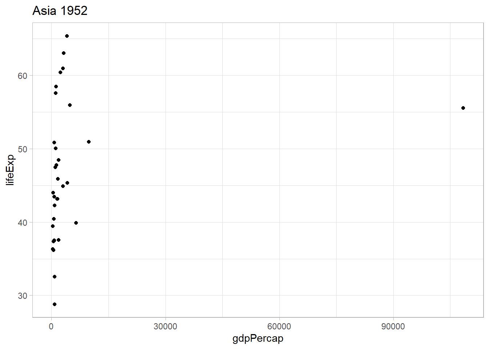
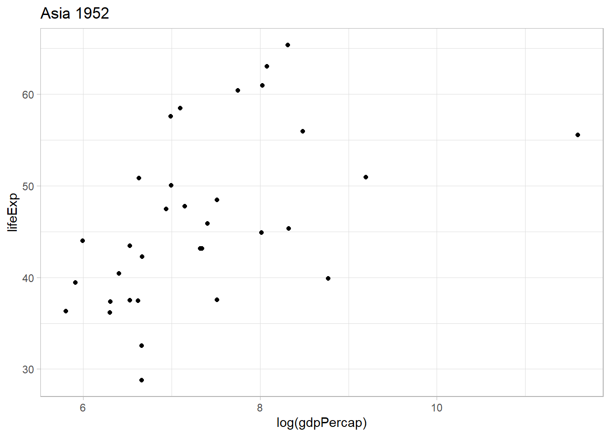
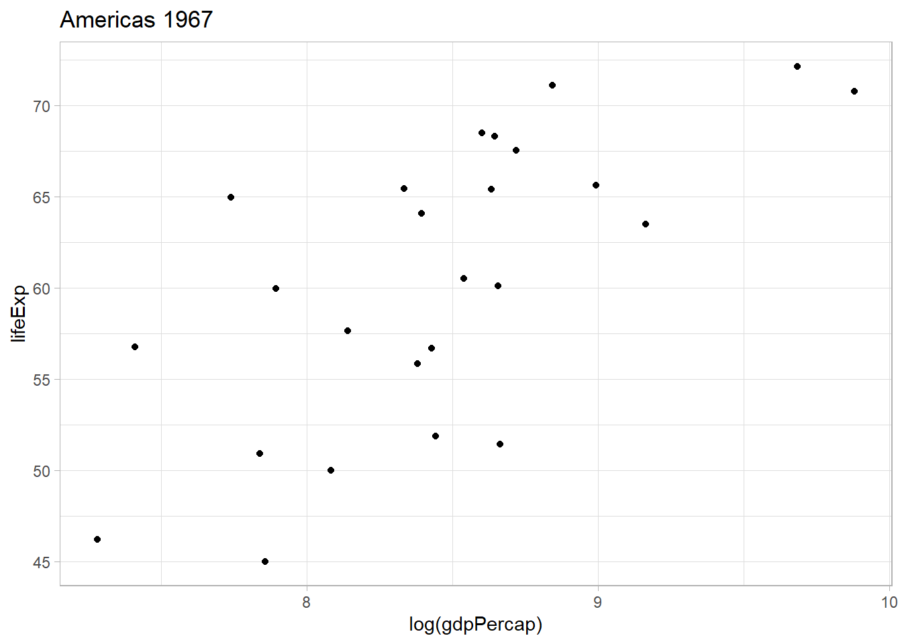
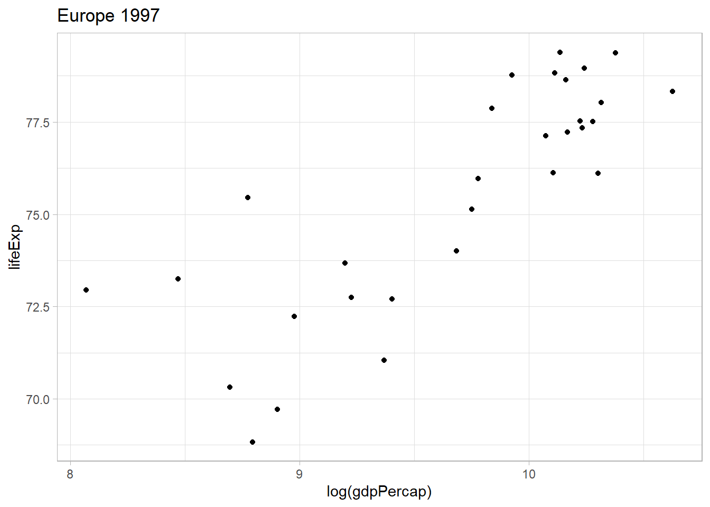

Last updated: 2020-05-03
Checks: 7 0
Knit directory: 033_purrr_learning/
This reproducible R Markdown analysis was created with workflowr (version 1.6.2). The Checks tab describes the reproducibility checks that were applied when the results were created. The Past versions tab lists the development history.
Great! Since the R Markdown file has been committed to the Git repository, you know the exact version of the code that produced these results.
Great job! The global environment was empty. Objects defined in the global environment can affect the analysis in your R Markdown file in unknown ways. For reproduciblity it’s best to always run the code in an empty environment.
The command set.seed(20200501) was run prior to running the code in the R Markdown file. Setting a seed ensures that any results that rely on randomness, e.g. subsampling or permutations, are reproducible.
Great job! Recording the operating system, R version, and package versions is critical for reproducibility.
Nice! There were no cached chunks for this analysis, so you can be confident that you successfully produced the results during this run.
Great job! Using relative paths to the files within your workflowr project makes it easier to run your code on other machines.
Great! You are using Git for version control. Tracking code development and connecting the code version to the results is critical for reproducibility.
The results in this page were generated with repository version 9848eb4. See the Past versions tab to see a history of the changes made to the R Markdown and HTML files.
Note that you need to be careful to ensure that all relevant files for the analysis have been committed to Git prior to generating the results (you can use wflow_publish or wflow_git_commit). workflowr only checks the R Markdown file, but you know if there are other scripts or data files that it depends on. Below is the status of the Git repository when the results were generated:
Ignored files:
Ignored: .Rproj.user/
Untracked files:
Untracked: data/gap_copy.rds
Untracked: data/gap_mod.rds
Untracked: data/gapminder_raw.csv
Note that any generated files, e.g. HTML, png, CSS, etc., are not included in this status report because it is ok for generated content to have uncommitted changes.
These are the previous versions of the repository in which changes were made to the R Markdown (analysis/04_map-over-multiple-input-objects.Rmd) and HTML (docs/04_map-over-multiple-input-objects.html) files. If you’ve configured a remote Git repository (see ?wflow_git_remote), click on the hyperlinks in the table below to view the files as they were in that past version.
| File | Version | Author | Date | Message |
|---|---|---|---|---|
| Rmd | 9848eb4 | ogorodriguez | 2020-05-03 | Section 4 examples |
map() can be used to iterate over more than one element of a list or over more than one column in a data frame. For that the purrr package has functions to work with iterations over two objects, the map2() function and the pmap()function if we need to iterate with 2 or more.
In this section we will work with an example that is going to create a list of plots to compare two of the columns of the gapminder data set: life expectancy and GDP for each continent/year combination.
The arguments of the map2() are the two objects to iterate over and the function that will combine them both.
map2(.x = object1, .y = object2, .f = name_of_function(.x, .y))
For this specific example I will define a vector list of continents and a paired vector or list of years to iterate through.
An important observation on how the iteration works. For example.
if .x = c(“Americas”, “Asia”) is my continent vector and, .y = c(1952, 2007) is my year vector; the iteration is not going to over all of the combinations possible with .x and .y. Meaning, it is not going to start pairing something like (Americas, 1952) and then (Americas, 2007), and then (Asia, 1952) and then (Asia, 2007).
The correct iteration will be first (America, 1952) then (Asia, 2007) only.
It goes over the list row by corresponding row, it seems.
In this case we will get our two element from the gapminder data set identified. One for the year and one for the continent.
gap_mod <- read_rds(here::here("data", "gap_mod.rds"))
continent_year <- gap_mod %>% distinct(continent, year)
continent_year
#> # A tibble: 60 x 2
#> continent year
#> <fct> <dbl>
#> 1 Asia 1952
#> 2 Asia 1957
#> 3 Asia 1962
#> 4 Asia 1967
#> 5 Asia 1972
#> 6 Asia 1977
#> 7 Asia 1982
#> 8 Asia 1987
#> 9 Asia 1992
#> 10 Asia 1997
#> # ... with 50 more rows# extract the continent and year as separate vectors
continents <- continent_year %>%
pull(continent) %>%
as.character()
years <- continent_year %>%
pull(year)To be consistent with the basic arguments, we will pass the previous vectors to .x and .y variables.
Before jumping into getting the corresponding graphs for all countries, we will try the code with one continent and one year to see the life expectancy of all the countries in that continent that given year.
.x <- continents[1]
.y <- years[1]
gap_mod %>%
filter(continent == .x,
year == .y) %>%
ggplot() +
geom_point(aes(x = gdpPercap, y = lifeExp)) +
ggtitle(glue::glue(.x, " ", .y))
This seems to work. I will use the log version of the gdpPercap variable to better see the differences between the countris with lower GDP per capita.
.x <- continents[1]
.y <- years[1]
gap_mod %>%
filter(continent == .x,
year == .y) %>%
ggplot() +
geom_point(aes(x = log(gdpPercap), y = lifeExp)) +
ggtitle(glue::glue(.x, " ", .y))
I will pass this code into a map2() function to gett all countries.
plot_list <- map2(.x = continents,
.y = years,
.f = ~ (
gap_mod %>%
filter(continent == .x,
year == .y) %>%
ggplot() +
geom_point(aes(x = log(gdpPercap),
y = lifeExp)) +
ggtitle(glue::glue(.x, " ", .y))
))The result is the creation of a list of graphs saved in the variable plot_list. We can start pulling graphs by calling them from their corresponding arguments.
# GDP per capita in America in 1967
plot_list[[40]]
# GDP per capita in Europe in 1997
plot_list[[22]]
Tibbles are data frames where the columns can also be lists (not only vectors as in base R.)
A tibble can nested, which means that some columns can contain grouped objects such as other data frames o lists.
The next example will nest the gapminder dataset by continent.
gap_copy <- read_rds(here::here("data", "gap_copy.rds"))
gap_nest <- gap_copy %>%
group_by(continent) %>%
nest()
gap_nest
#> # A tibble: 5 x 2
#> # Groups: continent [5]
#> continent data
#> <chr> <list>
#> 1 Asia <tibble [396 x 5]>
#> 2 Europe <tibble [360 x 5]>
#> 3 Africa <tibble [624 x 5]>
#> 4 Americas <tibble [300 x 5]>
#> 5 Oceania <tibble [24 x 5]>In the previous result the first is the variable we grouped by, continent, and the second column is the rest of the data fram corresponding to that group.
We can see the fifth entry displayed in detail here (Ocenia):
gap_nest$data[[5]]
#> # A tibble: 24 x 5
#> country year pop lifeExp gdpPercap
#> <chr> <dbl> <dbl> <dbl> <dbl>
#> 1 Australia 1952 8691212 69.1 10040.
#> 2 Australia 1957 9712569 70.3 10950.
#> 3 Australia 1962 10794968 70.9 12217.
#> 4 Australia 1967 11872264 71.1 14526.
#> 5 Australia 1972 13177000 71.9 16789.
#> 6 Australia 1977 14074100 73.5 18334.
#> 7 Australia 1982 15184200 74.7 19477.
#> 8 Australia 1987 16257249 76.3 21889.
#> 9 Australia 1992 17481977 77.6 23425.
#> 10 Australia 1997 18565243 78.8 26998.
#> # ... with 14 more rowsThe same can be achieved using purrr’s pluck() function.
# extract the fifth entry of the data column in gap_nest
gap_nest %>%
pluck("data", 5)
#> # A tibble: 24 x 5
#> country year pop lifeExp gdpPercap
#> <chr> <dbl> <dbl> <dbl> <dbl>
#> 1 Australia 1952 8691212 69.1 10040.
#> 2 Australia 1957 9712569 70.3 10950.
#> 3 Australia 1962 10794968 70.9 12217.
#> 4 Australia 1967 11872264 71.1 14526.
#> 5 Australia 1972 13177000 71.9 16789.
#> 6 Australia 1977 14074100 73.5 18334.
#> 7 Australia 1982 15184200 74.7 19477.
#> 8 Australia 1987 16257249 76.3 21889.
#> 9 Australia 1992 17481977 77.6 23425.
#> 10 Australia 1997 18565243 78.8 26998.
#> # ... with 14 more rowsNesting data frames can offer the possibility to use dplyr on more complex objects, not simply mutate() and the like. mutate() work when the columns are simply vectors.
In order for mutate() to work with nested columns we need to use the map() function.
test_list <- tibble(list_col = list(c(1, 5, 7),
5,
c(10, 10, 11))) %>%
mutate(list_sum = map(list_col, ~ sum(.x)))test_list %>%
pluck("list_sum", 3)
#> [1] 31Ir we want all sums as a list we can check:
test_list %>%
pull(list_sum)
#> [[1]]
#> [1] 13
#>
#> [[2]]
#> [1] 5
#>
#> [[3]]
#> [1] 31If we wanted the result to be a vector, we can pass map_dbl() instead.
test_dbl <- tibble(list_col = list(c(1, 5, 7),
5,
c(10, 10, 11))) %>%
mutate(list_sum = map_dbl(list_col, sum))test_dbl
#> # A tibble: 3 x 2
#> list_col list_sum
#> <list> <dbl>
#> 1 <dbl [3]> 13
#> 2 <dbl [1]> 5
#> 3 <dbl [3]> 31The idea is to calculate the average life expectancy within each continent and add it as a new column using mutate().
If we use mutate() the traditional way, this will not work:
gap_nest %>%
mutate(avg_life_exp = mean(data$lifeExp))
#> # A tibble: 5 x 3
#> # Groups: continent [5]
#> continent data avg_life_exp
#> <chr> <list> <dbl>
#> 1 Asia <tibble [396 x 5]> NA
#> 2 Europe <tibble [360 x 5]> NA
#> 3 Africa <tibble [624 x 5]> NA
#> 4 Americas <tibble [300 x 5]> NA
#> 5 Oceania <tibble [24 x 5]> NAThe code will not extract the lifeExp column for each data frame. Applying mutate to a data collumn will result in such errors since the data column in gap_nest is a list of data frames. The way to access data in list columns is via map().
We will try doing the mean lifeExp of a single continent and then we will expand it to the rest.
.x will be an individual nested data frame of gap_nest, say the first one, “Asia.” The following code defines it.
# the first entry of the nested column "data" in gap_nest, which is Asia
.x <- gap_nest %>%
pluck("data", 1)
.x
#> # A tibble: 396 x 5
#> country year pop lifeExp gdpPercap
#> <chr> <dbl> <dbl> <dbl> <dbl>
#> 1 Afghanistan 1952 8425333 28.8 779.
#> 2 Afghanistan 1957 9240934 30.3 821.
#> 3 Afghanistan 1962 10267083 32.0 853.
#> 4 Afghanistan 1967 11537966 34.0 836.
#> 5 Afghanistan 1972 13079460 36.1 740.
#> 6 Afghanistan 1977 14880372 38.4 786.
#> 7 Afghanistan 1982 12881816 39.9 978.
#> 8 Afghanistan 1987 13867957 40.8 852.
#> 9 Afghanistan 1992 16317921 41.7 649.
#> 10 Afghanistan 1997 22227415 41.8 635.
#> # ... with 386 more rowsTo calculate the mean life expectancy then will be.
mean(.x$lifeExp)
#> [1] 60.0649Now we need to copy this into the tilde-dot anonymous function for the rest. We will show this as a double column.
gap_nest %>%
mutate(avg_lifeExp = map_dbl(data, ~ mean(.x$lifeExp)))
#> # A tibble: 5 x 3
#> # Groups: continent [5]
#> continent data avg_lifeExp
#> <chr> <list> <dbl>
#> 1 Asia <tibble [396 x 5]> 60.1
#> 2 Europe <tibble [360 x 5]> 71.9
#> 3 Africa <tibble [624 x 5]> 48.9
#> 4 Americas <tibble [300 x 5]> 64.7
#> 5 Oceania <tibble [24 x 5]> 74.3Without the nested columns…
gap_nest %>%
mutate(avg_lifeExp = map_dbl(data, ~ mean(.x$lifeExp))) %>%
select(continent, avg_lifeExp)
#> # A tibble: 5 x 2
#> # Groups: continent [5]
#> continent avg_lifeExp
#> <chr> <dbl>
#> 1 Asia 60.1
#> 2 Europe 71.9
#> 3 Africa 48.9
#> 4 Americas 64.7
#> 5 Oceania 74.3Using summarise() will remove the nested column…
gap_nest %>%
summarise(avg_lifeExp2 = map_dbl(data, ~ mean(.x$lifeExp)))
#> # A tibble: 5 x 2
#> continent avg_lifeExp2
#> <chr> <dbl>
#> 1 Africa 48.9
#> 2 Americas 64.7
#> 3 Asia 60.1
#> 4 Europe 71.9
#> 5 Oceania 74.3Fitting models using nested columns in data frames allows to run such models all within a single data frame and then extracting values from the model as we need to test, evaluate, compare, and predict.
Building a simple linear model we will see how lifeExp can be modeled by population and gdpPercap.
First, we will fit a linear model for each continent and save its result as a nested column.
Starting from a basic unit of one continent as .x, again I will choose “Asia”, the linear model function will be..
lm(lifeExp ~ pop + gdpPercap + year, data = .x)
or simply lm(lifeExp ~ ., data = .x)
Testing.
lm(lifeExp ~ ., data = .x) %>% broom::tidy()
#> # A tibble: 36 x 5
#> term estimate std.error statistic p.value
#> <chr> <dbl> <dbl> <dbl> <dbl>
#> 1 (Intercept) -842. 20.1 -42.0 1.08e-140
#> 2 countryBahrain 28.2 1.32 21.3 7.91e- 66
#> 3 countryBangladesh 11.9 1.29 9.22 2.52e- 18
#> 4 countryCambodia 10.5 1.27 8.23 3.35e- 15
#> 5 countryChina 18.2 2.85 6.40 4.96e- 10
#> 6 countryHong Kong China 36.1 1.31 27.5 2.13e- 90
#> 7 countryIndia 11.3 2.25 5.01 8.52e- 7
#> 8 countryIndonesia 16.0 1.32 12.1 1.48e- 28
#> 9 countryIran 21.0 1.28 16.4 1.82e- 45
#> 10 countryIraq 19.1 1.28 14.9 1.36e- 39
#> # ... with 26 more rowsIt does. Now let’s fit this into our nested df.
gap_lm <- gap_nest %>%
mutate(lm_lifeExp = map(data, ~ (lm(lifeExp ~ pop + gdpPercap + year, data = .x))))
gap_lm
#> # A tibble: 5 x 3
#> # Groups: continent [5]
#> continent data lm_lifeExp
#> <chr> <list> <list>
#> 1 Asia <tibble [396 x 5]> <lm>
#> 2 Europe <tibble [360 x 5]> <lm>
#> 3 Africa <tibble [624 x 5]> <lm>
#> 4 Americas <tibble [300 x 5]> <lm>
#> 5 Oceania <tibble [24 x 5]> <lm>To find the values of the model for Ocenia we use then…
gap_lm %>%
pluck("lm_lifeExp", 5)
#>
#> Call:
#> lm(formula = lifeExp ~ pop + gdpPercap + year, data = .x)
#>
#> Coefficients:
#> (Intercept) pop gdpPercap year
#> -2.097e+02 8.365e-09 2.027e-04 1.415e-01Imagine we want to predict now the response of the data stored in the data column using the corresponding linear model.
gap_pred <- gap_lm %>%
mutate(pred = map2(lm_lifeExp, data, function(.lm, .data) predict(.lm, .data)))
gap_pred
#> # A tibble: 5 x 4
#> # Groups: continent [5]
#> continent data lm_lifeExp pred
#> <chr> <list> <list> <list>
#> 1 Asia <tibble [396 x 5]> <lm> <dbl [396]>
#> 2 Europe <tibble [360 x 5]> <lm> <dbl [360]>
#> 3 Africa <tibble [624 x 5]> <lm> <dbl [624]>
#> 4 Americas <tibble [300 x 5]> <lm> <dbl [300]>
#> 5 Oceania <tibble [24 x 5]> <lm> <dbl [24]>We can then calculate the correlation between the predicted response and the actual lifeExp value to see if our model is good fit. We can use map2_dbl() since the correlation is one single value and it can be shown in the column.
gap_cor <- gap_pred %>%
mutate(cor = map2_dbl(pred, data, function(.pred, .data) cor(.pred, .data$lifeExp)))
gap_cor
#> # A tibble: 5 x 5
#> # Groups: continent [5]
#> continent data lm_lifeExp pred cor
#> <chr> <list> <list> <list> <dbl>
#> 1 Asia <tibble [396 x 5]> <lm> <dbl [396]> 0.723
#> 2 Europe <tibble [360 x 5]> <lm> <dbl [360]> 0.834
#> 3 Africa <tibble [624 x 5]> <lm> <dbl [624]> 0.645
#> 4 Americas <tibble [300 x 5]> <lm> <dbl [300]> 0.779
#> 5 Oceania <tibble [24 x 5]> <lm> <dbl [24]> 0.987
sessionInfo()
#> R version 3.6.1 (2019-07-05)
#> Platform: x86_64-w64-mingw32/x64 (64-bit)
#> Running under: Windows 10 x64 (build 18362)
#>
#> Matrix products: default
#>
#> locale:
#> [1] LC_COLLATE=Spanish_Spain.1252 LC_CTYPE=Spanish_Spain.1252
#> [3] LC_MONETARY=Spanish_Spain.1252 LC_NUMERIC=C
#> [5] LC_TIME=Spanish_Spain.1252
#>
#> attached base packages:
#> [1] stats graphics grDevices utils datasets methods base
#>
#> other attached packages:
#> [1] forcats_0.5.0 stringr_1.4.0 dplyr_0.8.5 purrr_0.3.3
#> [5] readr_1.3.1 tidyr_1.0.2 tibble_3.0.0 tidyverse_1.3.0
#> [9] ggplot2_3.3.0
#>
#> loaded via a namespace (and not attached):
#> [1] tidyselect_1.0.0 xfun_0.12 haven_2.2.0 lattice_0.20-40
#> [5] colorspace_1.4-1 vctrs_0.2.4 generics_0.0.2 htmltools_0.4.0
#> [9] yaml_2.2.1 utf8_1.1.4 rlang_0.4.5 later_1.0.0
#> [13] pillar_1.4.3 glue_1.4.0 withr_2.1.2 DBI_1.1.0
#> [17] dbplyr_1.4.2 readxl_1.3.1 modelr_0.1.6 lifecycle_0.2.0
#> [21] cellranger_1.1.0 munsell_0.5.0 gtable_0.3.0 workflowr_1.6.2
#> [25] rvest_0.3.5 evaluate_0.14 labeling_0.3 knitr_1.28
#> [29] httpuv_1.5.2 fansi_0.4.0 broom_0.5.5 Rcpp_1.0.4.6
#> [33] promises_1.1.0 scales_1.1.0 backports_1.1.6 jsonlite_1.6.1
#> [37] farver_2.0.3 fs_1.4.1 hms_0.5.3 digest_0.6.25
#> [41] stringi_1.4.6 grid_3.6.1 rprojroot_1.3-2 here_0.1
#> [45] cli_2.0.2 tools_3.6.1 magrittr_1.5 crayon_1.3.4
#> [49] whisker_0.4 pkgconfig_2.0.3 ellipsis_0.3.0 xml2_1.3.1
#> [53] reprex_0.3.0 lubridate_1.7.8 rstudioapi_0.11 assertthat_0.2.1
#> [57] rmarkdown_2.1 httr_1.4.1 R6_2.4.1 nlme_3.1-144
#> [61] git2r_0.26.1 compiler_3.6.1